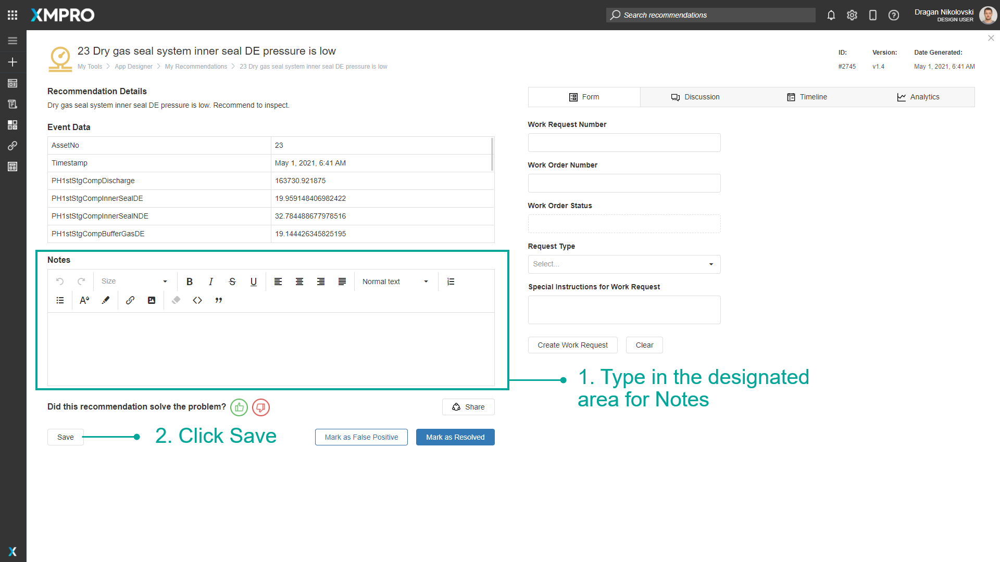

Manage Alerts
Recommendation Alerts are advanced Alerts that get triggered when real-time data meets the criteria defined in a Recommendation Rule. They notify you when certain conditions occur in your data and provide decision support for how to take action.
Recommendations create new Recommendation Alerts based on Business Rules, and the Alerts recommend the best next actions based on expert suggestions. Recommendation Alerts monitor the actions taken and outcomes to close the loop on event response.
Note
It is recommended that you read the article listed below to improve your understanding of Recommendations Alerts.
Finding Recommendation Alerts
The search bar can be used to find any specific Recommendation Alerts that you may be looking for. There is a dropdown option where you can specify to search through everything in App Designer, or only for Recommendation Alerts.
How to Use the Recommendation Alerts Grid
How to Filter the Grid
- Open the Recommendation Alerts page.
- Click the filter icon next to the column that you want to filter on.
- Tick the desired checkbox.
- Click OK.
The Grid with Alerts will be updated.

How to Search the Grid
- Open the Recommendation Alerts page.
- Start typing in the search bar.
- The Grid with Alerts will be automatically updated.
How to Resolve Alerts From the Grid
- Open the Recommendation Alerts page.
- Tick the checkbox of the Alerts that you want to Resolve.
- Click the Mark As Resolved button.
How to Show Archived Alerts
- Open the Recommendation Alerts page.
- Tick the Show Archived checkbox.
The Grid with Alerts will be updated with archived Alerts.
How to Use the Alert Details Page
The Recommendation Alert page provides details of the alert and allows you to monitor, discuss, and take action.
How to Add a Notes
- Type in the designated area for Notes.
- Click Save.

How to Fill Out a Form
- Click the Form tab.
- Fill on the form fields.
- Click the Create Work Request button in the form to save the changes.
How to Contribute to a Discussion
- Click the Discussion tab.
- Write your message.
- Click the Send button.
How to Share an Alert
- Click the Share button.

2. Select Users from the dropdown.
3. Add a Note.
4. Click the Share button.

How to Save, Resolve, and Mark as False Positive
- Clicking the Save button - Changes will be saved and Alert Details Page will stay open.
- Mark as False Positive - Will mark the Alert as False Positive and will close the Alert Details Page.
- Mark as Resolve - Will resolve the Alert and close the Alert Details Page.
Last modified: May 29, 2025